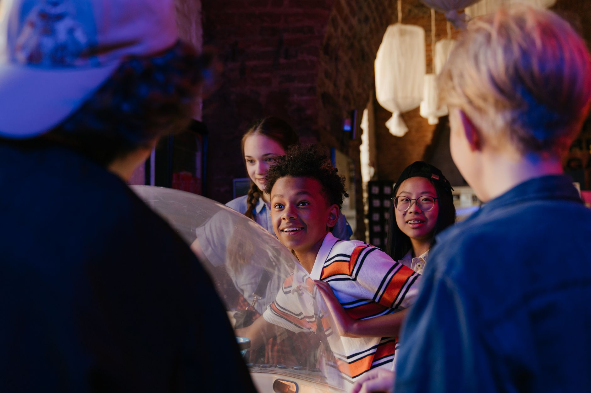

ThemeSchemes are thematically organized walking guides designed for K-12 students visiting the Museum of Anthropology. Although it is one of Canada’s largest teaching museums, the majority of the Museum of Anthropology’s educational programming is designed for older audiences. ThemeSchemes make the MOA more accessible for K-12 visitors by guiding students, their families, and affiliated educators to objects that serve as tangible examples of concepts outlined in national curriculum goals. These guided walks are organized by grade-level and by theme so that students of all ages can participate.